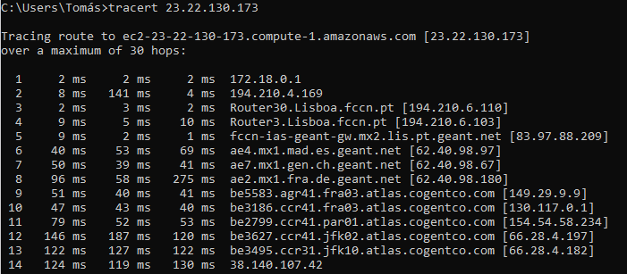

Programação Web A Internet e a Web
O protocolo de troca de mensagens entre um cliente e um servidor Web é o HTTP.
Aqui vai-ser apresentar 2 temas:
Como é apresentado nesta imagem, é a localização do endereço, é correta, exatemente onde o aluno se encontra (Universidade Lusofona) onde o ip é 193.137.75.187
Com Latitude: 38.731 (38° 43′ 51.60″ N) e Longitude: -9.1373 (9° 8′ 14.28″ W)
É notorio reparar também onde se encontra a aplicação, neste caso encontra-se nos Estados Unidos, onde o ip é 23.22.130.1733
Traceroute (comando tracert) é uma ferramenta de diagnóstico que rastreia a rota que os pacotes IP fazem, desde o seu computador até um endereço IP destino/ou URL que especifique.
Este identifica os routers pelos quais os pacotes passam até o seu destino, indicando o tempo que demoram por "salto" entre router.
Devido ao poder do traceroute, fui testar na minha linha de comandos um breve traceroute ao ip obtido pela aplicação
Aqui, é apresentado uma ligação aos routers cá, na tentativa de rastreação de pacotes entre a o meu endereço, e o endereço da app.
. Um Web browser (Chrome, Safari, Firefox, etc) é uma aplicação que corre numa máquina "cliente" (o seu portátil por exemplo) e é capaz de enviar um pedido usando o protocolo HTTP a um servidor Web:
Todos os browsers têm uma ferramenta (browser developer tool) que permite inspeccionar ficheiros descarregados pelo browser, permitindo analisar uma grande variedade de informação.
Assim, devido às ferramentas disponibilizadas pelo browser, é possível na aplicação criada por nós